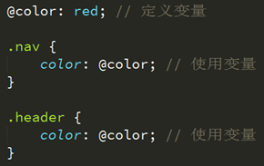
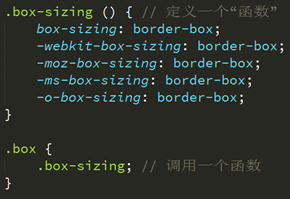
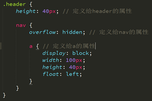

CSS 预处理器是一种语言，用来为 CSS 增加一些编程的的特性，无需考虑浏览器的兼容性问题，并且你可以在 CSS 中使用变量、简单的程序逻辑、函数等等在编程语言中的一些基本技巧，可以让你的 CSS 更简洁，适应性更强，代码更直观等诸多好处。
常见的CSS预处理器有：LESS、SASS、Stylus等
LESS 是动态的样式表语言，通过简洁明了的语法定义，使编写 CSS 的工作变得非常简单，本质上，LESS 包含一套自定义的语法及一个解析器。
-安装
1、安装Nodejs环境 Node Package Manager (验证 node -v npm -v)
2、打开控制台（cmd），执行npm install -g less (验证 lessc -v)
3、命令行编译 lessc path/xxx.less path/xxx.css
-编译
1.浏览器只能识别CSS，LESS只是用来提升CSS可维护性的一个工具，所最终需要将LESS编译成CSS，然而通过命令行编译效率比较低下，一般都会借助于编辑器来完成编译，以sublime_text为例，sublime_text默认并不支持LESS的编译操作，需要安装插件实现。
2、执行npm install -g less-plugin-clean-css（使用sublime_text才用）
3、ctrl+shit+p打开命令面板
4、输入install package然后回车
5、安装 LESS、lessc、Less2Css三个插件
6、alt+s快捷键即可实现编译
- 语法
1、变量
格式：@变量名: 值，定义完成后可以重复使用

2、混合
我们可以像使用函数一样来使用CSS

3、嵌套
嵌套可以非常方便的管理我们的CSS层级关系
